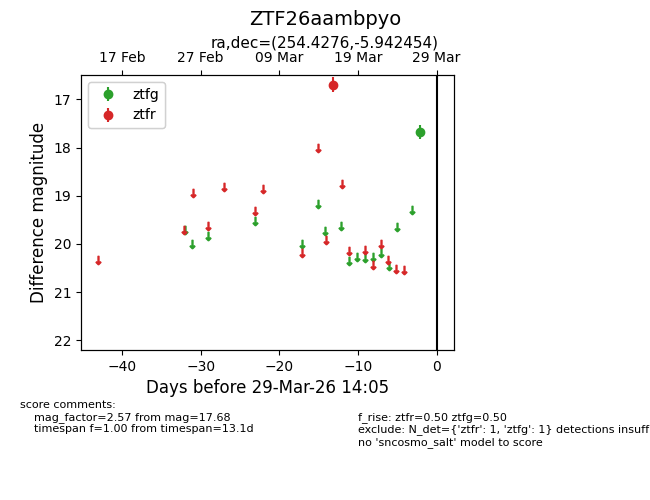
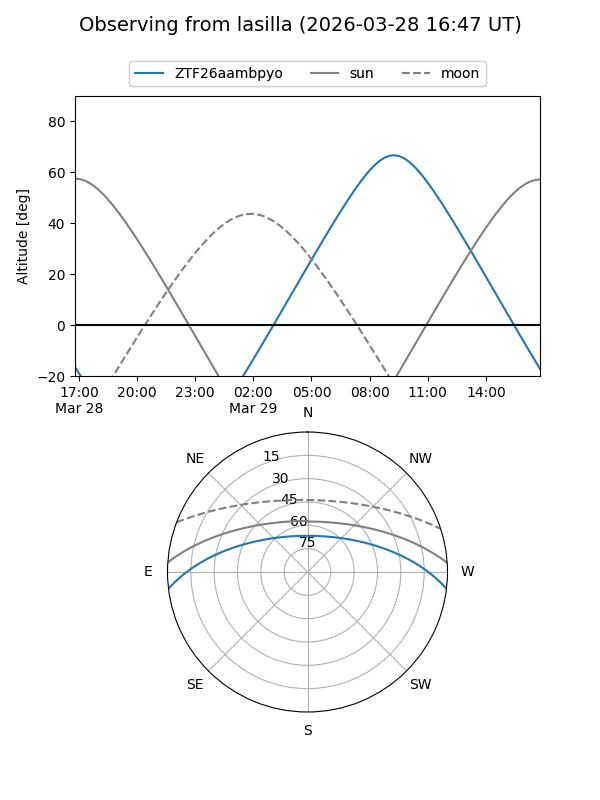
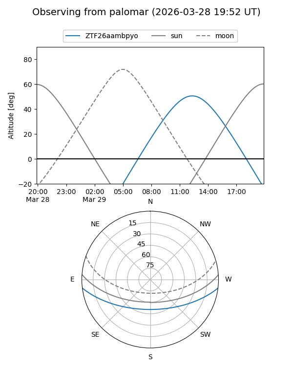

ZTF26aambpyo
Target ZTF26aambpyo at 2026-03-29 14:08
Aliases and brokers:
FINK: link
Lasair: link
ALeRCE: link
alt names
ZTF26aambpyo (ztf,fink_ztf)
Coordinates:
equatorial (ra, dec) = 254.4276,-5.94245
equatorial (HMS+DMS) = 16:57:42.62,-05:56:32.83
galactic (l, b) = (13.5286,+21.97800)
Flags:
Photometry:
last ztfg=17.68, ztfr=16.69
1 ztfg, 1 ztfr detections
Lightcurve

Visibility


Additional plots